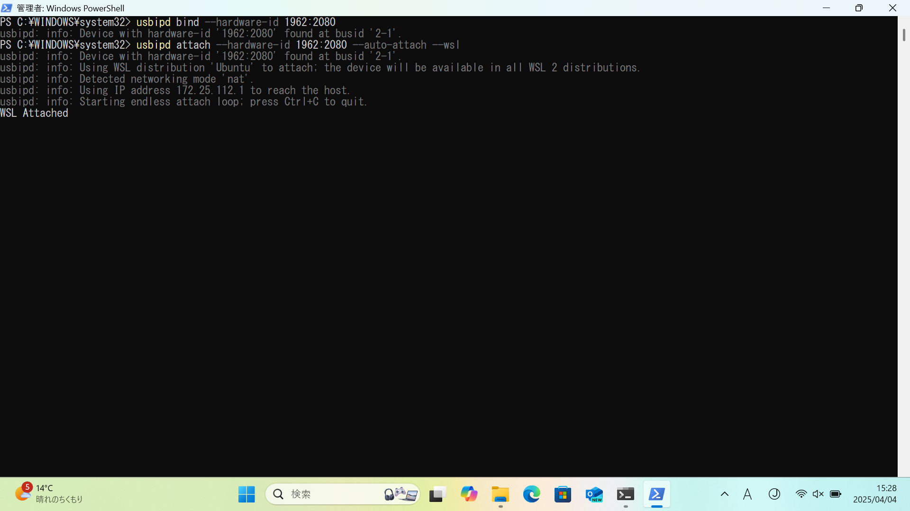

Windowsの環境構築
このページでは、倒立振子を制御するための環境構築手順（Windows版）を説明します。
1. Windows Subsystem for Linux (WSL) 環境の構築
Windows上でLinux環境（Ubuntu）を実行するため、Windows Subsystem for Linux（WSL）を使用します。さらに、USBデバイスをWSLに接続するため、usbipd-winを使用します。
PowerShellの起動（管理者モード）:

- スタートメニューを開き、「powershell」と入力してください。
- 「Windows PowerShell」を選択または右クリックし、「管理者として実行」をクリックしてください。
WSLのインストール:

- PowerShellに以下のコマンドを入力し、Enterキーを押して実行してください。
wsl --install
WSLのインストールが完了したら、PCを再起動してください。
Ubuntuのインストール:

- PowerShellを管理者モードで起動し、以下のコマンドを実行してください。
wsl --install Ubuntu
usbipd-winのインストール:

- ブラウザを開き、GitHubのリリースページにアクセスしてください。
- 最新版のインストーラー（.msiファイル）をダウンロードしてください。
- ダウンロードしたファイルを実行し、インストールを進めてください。
Ubuntuとusbipd-winのインストールが両方完了したら、もう一度PCを再起動してください。
Ubuntuの起動:


- スタートメニューで「Ubuntu」と検索し、アプリを起動してください。
- 初回起動時にユーザー名とパスワードの設定を求められます。任意のユーザー名とパスワードを設定してください。
Ubuntuの初期設定（USBデバイスの既定パーミッション変更）:

- Ubuntuを起動し、ユーザー名とパスワードの設定が完了したら、以下のコマンドを実行してUSBデバイスの既定パーミッションを変更してください。
echo 'SUBSYSTEM=="usb", ATTR{idVendor}=="1962", ATTR{idProduct}=="2080", MODE="0666"' | sudo tee /etc/udev/rules.d/100-usb.rules
sudo udevadm control --reload-rules
2. Python環境の構築
Ubuntu上でPython環境を構築するため、Minicondaを使用します。さらに、Pythonを用いたUSB通信を行うために、hidapiを使用します。
Minicondaのインストール:

- Ubuntuのターミナル上で以下のコマンドを実行し、Minicondaをインストールしてください。
wget https://github.com/conda-forge/miniforge/releases/latest/download/Miniforge3-Linux-x86_64.sh
bash ./Miniforge3-Linux-x86_64.sh -b -p ~/miniforge3
~/miniforge3/bin/conda init
source ~/.bashrc
hidapiのインストール:
- Minicondaの仮想環境内で以下のコマンドを実行し、hidapiをインストールしてください。
conda install hidapi
3. 倒立振子の接続・動作確認
倒立振子をWSL（Ubuntu）に接続:
- 倒立振子をUSBケーブルでPCに接続してください（通常の接続時、本体の操作ボタンは押さないでください）。
- PowerShellを管理者モードで起動し、以下のコマンドを実行して倒立振子をWSLに接続してください。
usbipd bind --hardware-id 1962:2080
usbipd attach --hardware-id 1962:2080 --auto-attach --wsl
-

テストスクリプトのダウンロード:
- ブラウザを立ち上げ、BEEF+ にログインしてください。
- 総合実験1(b)のページを開き、教材>1回目からtest.py をダウンロードしてください。
- ダウンロードしたtest.pyを、Ubuntuのホームディレクトリにコピーしてください。
テストスクリプトの実行（動作確認）:

- Ubuntuのターミナル（Minicondaの仮想環境内）で以下のコマンドを実行し、USB通信の動作確認を行ってください。
python3 test.py - 車輪の角度が表示され、モータが回転すれば成功です。
モーターが回転しない場合は、電源スイッチがオフになっているか、電池残量が不足している可能性があります。